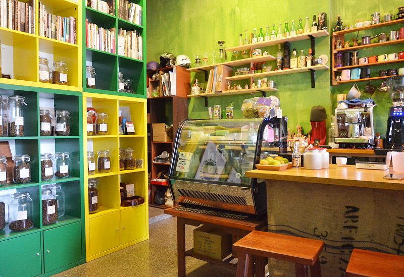
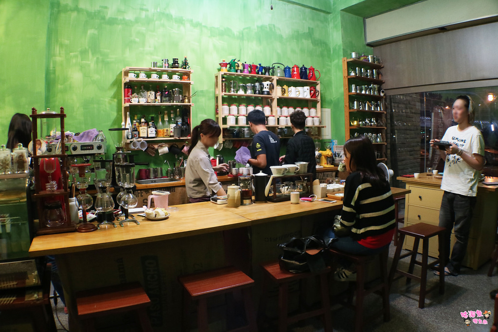

黛西堂咖啡豆舖


這家店跟我以往去過的店很不同, 老闆及老闆娘很喜歡跟客人裝熟, 店內滿滿的手沖器具都是要給客人使用的, 他們認為咖啡應該是每個人都能沖然後一起share這樣。 店內的咖啡豆一擺就是二十幾支, 常有許多一般咖啡店不常見的豆子, 像是中國, 剛果, 夏威夷這些地區產出的咖啡豆, 也只有在這裡看過XD 主要消費客群都是上班族, 店內也祭出自己手沖, 任一支咖啡都$100的優惠, 期望能將手沖及精品咖啡的概念推廣出去, 小編我很愛這裡的環境, 老闆有自己私藏一些古董器具, 也會跟我分享一些咖啡展的資訊, 不定期舉辦咖啡品豆大會, 看得出他們夫妻倆很努力想推廣精品咖啡這一塊, 這樣的店真的很少見呢。 這家店的咖啡豆調性主要以杏仁堅果味為主, 很符合大部分人喜歡的調性XD